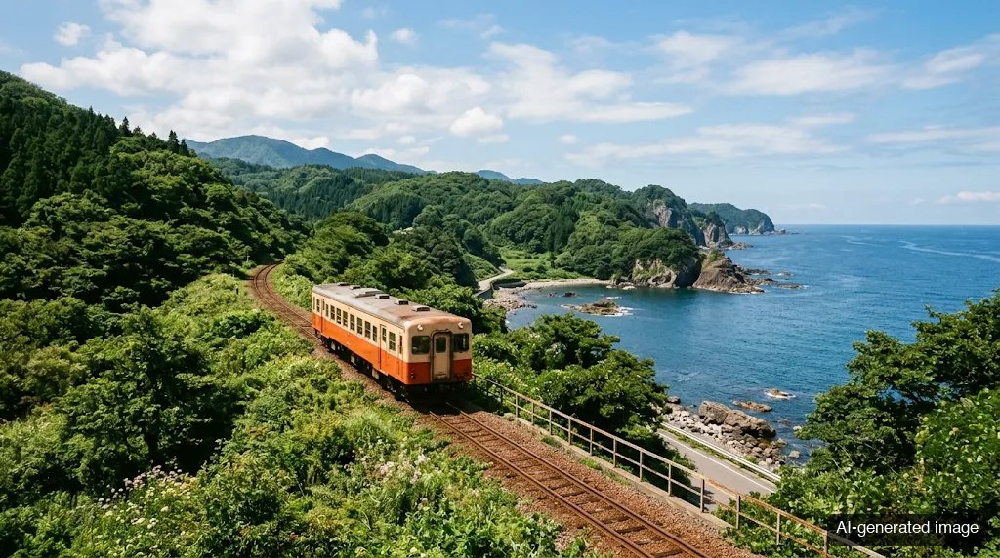

Airports
Tajima Airport is about 30 minutes by car, and Tottori Airport about 40 minutes.
Trains, the free station pickup, and what to expect in snow.
Your stop is JR Kasumi Station on the San'in Line. Minatokan picks you up there for free and takes you back the next day. The drive is about 10 minutes.

| From | Approx. time to Kasumi | Notes |
|---|---|---|
| Kinosaki Onsen | About 30 minutes | By Limited Express Hamakaze |
| Himeji | About 2 hours | By Limited Express Hamakaze |
| Kobe | About 3 hours | By Limited Express Hamakaze |
| Osaka | About 3 hours 30 minutes | By Limited Express Hamakaze from Osaka Station |
| Kyoto | About 3 hours | Hamakaze does not start in Kyoto. A common route is a limited express toward Kinosaki Onsen, then onward on the San'in Line |
Times come from the ryokan's access page and travel sources. The Hamakaze runs about 3 round trips a day and not every service runs the full route, so it pays to confirm your train with JR West.
If you know your arrival time, the comments box in your reservation is the place to share it. If you decide on the day, a phone call to the ryokan works. Staff will also stop at a souvenir shop on the way if you ask.
Tajima Airport is about 30 minutes by car, and Tottori Airport about 40 minutes.
From Osaka or Kobe, the usual route follows the expressways to Tajima Airport IC, then Route 312 and Route 178 toward Kasumi. Free parking holds 17 cars.
The ryokan sits a little above the main road. If your car is large or low to the ground, tell the staff and they will guide you to a second lot. Two Lawson convenience stores are about 7 minutes away by car.
This area gets heavy snow and sudden weather changes. If your car or train gets stuck, the ryokan offers to collect guests for free from places as far as Wadayama or Toyooka, so a phone call is your best move. A seasonal "crab bus" also runs in winter, and the ryokan can tell you about it.
Every booking on this guide goes to Minatokan's own reservation site, so you see its current plans and prices. The pages are in Japanese, and this walkthrough explains each step in English.
See rooms & rates Email the ryokan Call +81-796-36-3330Thank you for spending time with Kasumi today. A small next step is looking up your train on the JR West site. Would you like ideas for the day before or after?